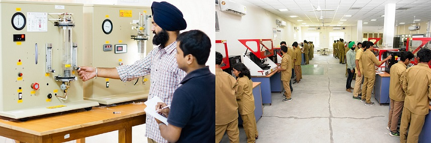

The Department of Mechanical Engineering was established in 1956 with the inception of the Institute to produce high quality engineers in the field of Mechanical Engineering to cater the needs of the newly Independent India. Since 1985, the department has increasingly focused on post graduate education and research. The Department offers undergraduate programs leading to B.E. Mechanical Engineering, B.E. Mechanical Production Engineering, B.E. Mechatronics Engineering, Integrated B.E. Mechanical MBA; Postgraduate programs leading to M.E. CAD/CAM & Robotics, M.E. Production & Industrial Engineering, M.E. Thermal Engineering program; and Doctoral program leading to PhD Degree in emerging areas of research. The B.E. Mechanical Engineering Program is accredited by the Engineering Accreditation Commission of ABET. The department has aligned its curriculum with that of Trinity College Dublin (University of Dublin, Ireland) as part of the academic collaboration to impart global standard education to the students. This collaboration offers exchange programmes for students and faculty, joint research initiatives and dual campus degrees where students can complete half of their course at Thapar Institute of Engineering & Technology's Patiala campus and the other half in Dublin. The Department aims to produce quality professionals in Mechanical Engineering to compete globally and excel by carrying out basic and applied research in emerging areas by forging strong industry - institute interaction. The Department is also notable for its laurels in international forums like Society of Automobile Engineers (SAE) Formula Student, Europe and has an active staff/student exchange program with the University of Waterloo, Canada. The Department has been able to attract numerous prestigious research and infrastructural grants in recent years from agencies such as AICTE, DRDO, DST, UGC, to list a few. The department is having high quality laboratories in areas of Bulk Solids and Particulate Technologies, Heat & Mass Transfer, I.C engine, Manufacturing, Automation/Robotics, Computer Aided Designs etc. The faculty and staff are actively involved in fostering industrial collaborations through training programs, workshops, consulting projects etc.